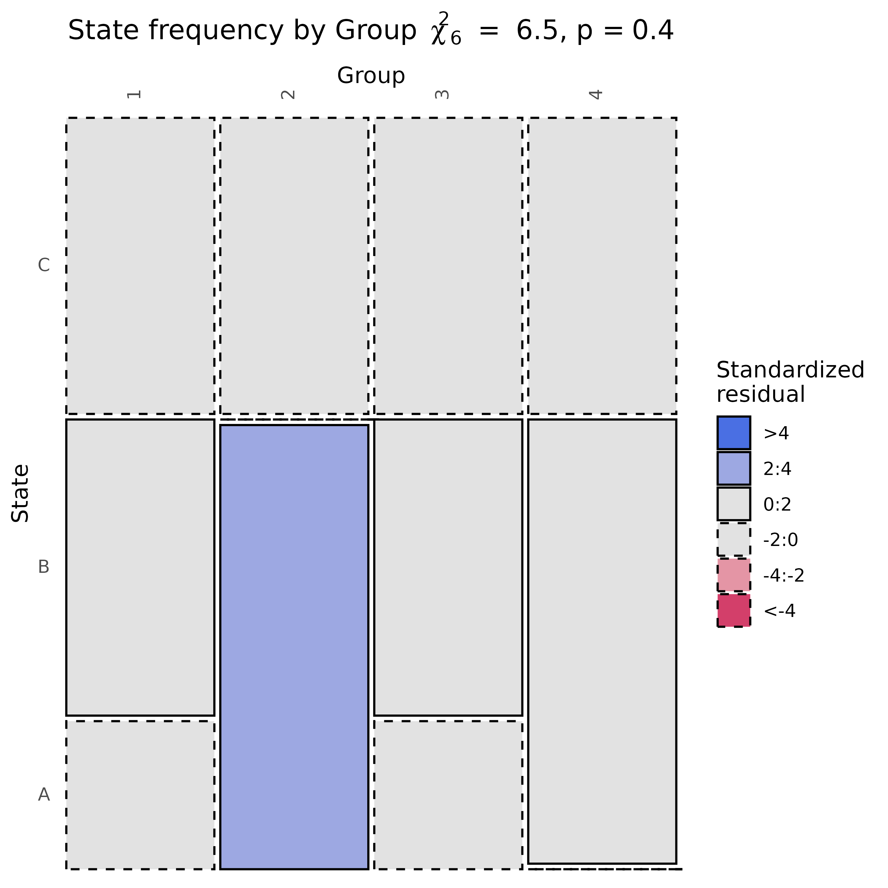

Plot State Frequencies as a Mosaic Between Two Groups
Usage
# S3 method for class 'tna_data'
plot_mosaic(x, group, label = "Group", digits = 1, ...)Arguments
- x
A
tna_dataobject.- group
A
characterstring giving the column name of the (meta) data to contrast the frequencies with or a vector of group indicators with the the same length as the number of rows in the sequence data.- label
An optional
characterstring that specifies a label for the grouping variable whengroupis not a column name of the data.- digits
An
integerthat determines the number of digits to use for the chi-square test statistic and the p-value in the plot.- ...
Ignored.
See also
Basic functions
build_model(),
hist.group_tna(),
hist.tna(),
plot.group_tna(),
plot.tna(),
plot_frequencies(),
plot_frequencies.group_tna(),
plot_mosaic(),
plot_mosaic.group_tna(),
print.group_tna(),
print.summary.group_tna(),
print.summary.tna(),
print.tna(),
summary.group_tna(),
summary.tna(),
tna-package
Examples
d <- data.frame(
time = rep(1:5, rep = 4),
group = rep(1:4, each = 5),
event = sample(LETTERS[1:3], 20, replace = TRUE)
)
sequence_data <- prepare_data(
d,
time = "time",
actor = "group",
action = "event"
)
#> ── Preparing Data ──────────────────────────────────────────────────────────────
#> ℹ Input data dimensions: 20 rows, 3 columns
#> ℹ First few time values: 1, 2, and 3
#> ℹ Detected <numeric> time values: treating as Unix timestamp.
#> ℹ Number of values to parse: 20
#> ℹ Sample values: 1, 2, and 3
#> ℹ Sample of parsed times: 1970-01-01 00:00:01, 1970-01-01 00:00:02, and
#> 1970-01-01 00:00:03
#> ℹ Time threshold for new session: 900 seconds
#> ℹ Total number of sessions: 4
#> ℹ Number of unique users: 4
#> ℹ Total number of actions: 20
#> ℹ Maximum sequence length: 5 actions
#> ℹ Time range: 1970-01-01 00:00:01 to 1970-01-01 00:00:05
plot_mosaic(sequence_data, group = "group")
